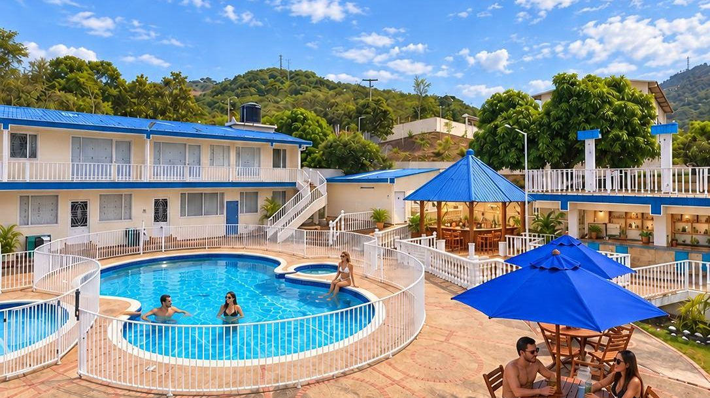

Pueblos de clima cálido cerca de Bogotá: comparativo para elegir tu escapada
Cuando el frío de la Sabana aprieta, la pregunta siempre es la misma: ¿para dónde nos vamos? Comparamos los pueblos cálidos más buscados con datos claros, para que elijas en minutos.
Lectura de 5 minHotel Cabaleón
Si buscas pueblos de clima cálido cerca de Bogotá, tienes opciones para todos los gustos: desde el calor suave de montaña, con noches frescas, hasta el calor intenso de tierra caliente. La clave para elegir está en tres datos: distancia, altura y temperatura. Aquí los tienes juntos.
La regla de oro: la altura define el calor
Bogotá está a unos 2.600 metros de altura y su temperatura media ronda los 14 °C. Por regla general, la temperatura sube alrededor de 0,6 °C por cada 100 metros que bajas. Por eso un pueblo a 1.200 metros es templado y cálido, y uno a 300 metros es caliente casi todo el día.
- Entre 1.200 y 1.400 metros: días cálidos, noches frescas y paisaje de montaña.
- Entre 700 y 1.000 metros: calor marcado, ideal para piscina.
- Por debajo de 400 metros: tierra caliente, de 27 °C a 28 °C de media.
Comparativo de pueblos de clima cálido cerca de Bogotá
| Pueblo | Región | Distancia aprox. desde Bogotá | Altura | Temperatura media |
|---|---|---|---|---|
| Tena | Tequendama | 66 km | 1.384 m (media) | Tres pisos térmicos; 24 °C a 28 °C de día en la vereda Escalante |
| La Mesa | Tequendama | 54 km | 1.200 m | 24 °C |
| La Vega | Gualivá | 54 km | 1.230 m | 22 °C a 27 °C |
| Mesitas del Colegio | Tequendama | 66 km por carretera | 990 m | Cálido |
| Villeta | Gualivá | 91 km | 850 m | 24 °C a 25 °C |
| Anapoima | Tequendama | 87 km | 710 m | Cálido |
| Tocaima | Alto Magdalena | 113 km | 400 m | 27 °C |
| Melgar (Tolima) | Tolima | 98 km | 323 m | 28 °C |
| Girardot | Alto Magdalena | 134 km | 290 m (casco urbano) | 28 °C |
Las distancias son las que reporta la ficha de cada municipio y pueden ser en línea recta o por carretera. El tiempo real de viaje depende del tráfico: revisa tu aplicación de mapas antes de salir.
¿Cuál elegir según tu plan?
Si quieres calor sin sofoco y noches frescas
Tena, La Mesa y La Vega. Son ideales para dormir bien, caminar de día y disfrutar paisajes de montaña. Tena suma bosque de niebla, una laguna sagrada y avistamiento de aves.
Si quieres calor fuerte para estar todo el día en la piscina
Tocaima, Melgar y Girardot. Prepárate para temperaturas altas: bloqueador, gorra e hidratación constante.
Si solo tienes un día
Elige un destino cercano para no gastar el día en la carretera. Un pasadía con almuerzo y piscina es la mejor opción: mira cómo es el pasadía cerca de Bogotá.
Si viajas con niños
Prioriza trayectos cortos, piscina infantil y clima agradable: con calor moderado los niños juegan más y se cansan menos. Revisa siempre la profundidad de las piscinas.
Si viajas en pareja
Busca lugares tranquilos y con pocos alojamientos, donde la atención sea personalizada. Una suite o una cabaña con vista a la montaña hace la diferencia.
¿Por qué Tena es una gran opción?
- Cerca: unas 2 horas desde Bogotá por la Calle 13 o la vía Mondoñedo.
- Clima agradable: en la vereda Escalante el día está entre 24 °C y 28 °C y la noche es fresca.
- Naturaleza única: la Laguna de Pedro Palo, caminos reales y más de 340 especies de aves.
- Descanso completo: en Hotel Cabaleón tienes piscinas, jacuzzi, sauna, turco, gimnasio, cancha y juegos en 9.000 m² de jardines, con solo 16 alojamientos.
Conoce todos los planes en nuestra guía de qué hacer en Tena.
Cómo elegir tu pueblo en 6 pasos
- Define cuánto calor quieres: templado y fresco en la noche, o caliente todo el día.
- Calcula el tiempo de viaje de ida y regreso, sobre todo si es un plan corto.
- Revisa la fecha: en los puentes festivos hay más tráfico y más demanda. Mira el calendario de puentes.
- Decide el plan: pasadía o fin de semana.
- Reserva directo con el alojamiento para tener claro el valor final, con impuestos incluidos.
- Empaca según el clima: usa nuestra lista de qué llevar a clima cálido.
Consejos para la carretera
- Sal temprano y evita el viernes en la tarde.
- Regresa temprano o tarde: el domingo y el lunes festivo en la tarde son los momentos de más tráfico de entrada a Bogotá.
- Consulta el pico y placa regional: Bogotá suele aplicarlo en el regreso de los puentes festivos.
- Hidrátate y usa bloqueador desde el primer día: el sol en tierra caliente es fuerte.
Fuentes de altura, temperatura y distancia: fichas municipales en Wikipedia de Tena, La Mesa, La Vega, Villeta, Anapoima, Tocaima, Melgar, Girardot (consultadas el 12 de octubre de 2026). La temperatura de la vereda Escalante es la que publica Hotel Cabaleón.
Tu descanso comienza aquí
Elige fechas y habitaciones en nuestra página: ves tu factura al instante, con impuestos y desayuno incluidos, y confirmas con el anticipo del 50 % o el pago total. Directo con el hotel, sin intermediarios.
Preguntas frecuentes
¿Cuáles son los pueblos de clima cálido más cercanos a Bogotá?
Entre los más cercanos están La Mesa y La Vega (unos 54 km) y Tena (unos 66 km). Más lejos, y más calientes, están Anapoima, Villeta, Tocaima, Melgar y Girardot.
¿Qué pueblo cerca de Bogotá tiene el mejor clima?
Depende de lo que busques. Para calor agradable con noches frescas, Tena, La Mesa o La Vega, entre 1.200 y 1.400 metros. Para calor fuerte de piscina, Tocaima, Melgar o Girardot.
¿Dónde ir a piscinear cerca de Bogotá?
Cualquiera de los pueblos de la provincia del Tequendama o del Alto Magdalena. En Tena, Hotel Cabaleón tiene piscina para adultos, piscina infantil, jacuzzi y pasadía con almuerzo.
¿Qué tan lejos está Tena de Bogotá?
A unos 66 km: alrededor de 2 horas en carro según el tráfico, saliendo por la Calle 13 o por la vía Mondoñedo.
¿Qué pueblo cálido es mejor para ir con niños?
Uno cercano y con clima agradable, para que el viaje sea corto y el calor no canse. Revisa que haya piscina infantil y zonas verdes.
¿Cuándo conviene viajar a clima cálido desde Bogotá?
Un fin de semana sin puente tiene menos tráfico. Si viajas en puente festivo, reserva con tiempo y sal temprano.
Equipo de Hotel CabaleónComplejo turístico campestre en Tena, Cundinamarca. Publicado el .